Puma Shenpumashen
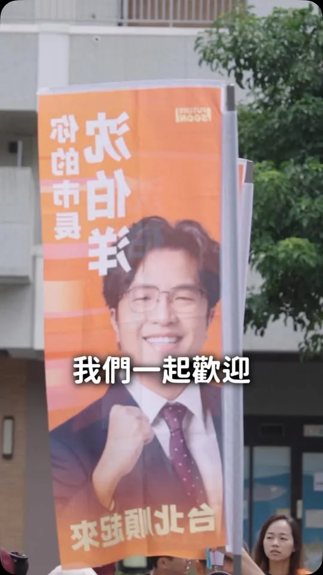
接下這個舵，我們將乘著這股洋流，一起駛進市政府！ ⠀ 謝謝 蔡英文 小英總統今天陪同我和台北隊登記參選。 ⠀ 因為我來了， 因為台北隊來了， 我們會一起 讓台北順起來，航向新未來！
Posts

接下這個舵，我們將乘著這股洋流，一起駛進市政府！ ⠀ 謝謝 蔡英文 小英總統今天陪同我和台北隊登記參選。 ⠀ 因為我來了， 因為台北隊來了， 我們會一起 讓台北順起來，航向新未來！

President Tsai Ing-wen Joins the Taipei Team! Setting Sail for the Great Route!
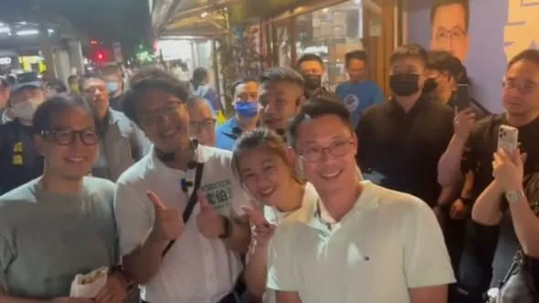
南機場夜市不只有創意 還有同學愛ಥ_ಥ ⠀ 看到有自製手燈 機車影片燈箱 路上還遇到好幾個建中同學 真的好開心 ⠀ 遇到嗆聲的 也很有創意 希望他們有愉快的夜晚 ⠀ 感謝大家幫我充電 也謝謝店家的款待 今天我都有簽好簽滿喔

我是蘇巧慧，今天我正式參選新北市長！ 參選新北市長，是因為我對這座栽培我、孕育我的城市有深厚的感情。我相信，新北可以發展得更快、更好，我們要讓所有人在新北安心生活、發展精彩，我們要讓29區化作點點繁星，成為一片耀眼的星河。 身為隊長，我會帶領身後36位優秀的議員候選人組成最強新北隊。我們會盡最大的努力，帶來最好的願景，讓新北成為 #台灣人安居樂業的首選、#外國人一生必來一次的城市！ #新時代 就要來了。最後80多天，請大家繼續為我加油，我們一起拚，拚出新北新時代！#2026新北慧贏！

@zenolai:高雄隊，正式出發！ 接下關鍵第四棒，和所有隊友並肩向前，延續進步，為高雄拚出更好的未來。 高雄第一，全力以赴💪
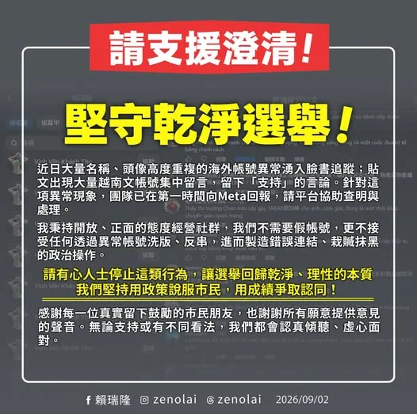
堅守乾淨選舉 昨晚起，發現大量名稱、頭像高度重複的海外帳號異常湧入臉書追蹤；今天上午發布參選登記貼文後，更出現大量越南文帳號集中留言，留下「支持」的言論。 針對這項異常現象，團隊已在第一時間向 Meta 回報，請平台協助查明與處理。 我要再次說明，我一直秉持開放、正面的態度經營社群，我們不需要假帳號，更不接受任何透過異常帳號洗版、反串，進而製造錯誤連結、栽贓抹黑的政治操作。 上午登記時，我也宣示「正面第一」的承諾，相信高雄市民期待的是政策、願景與城市發展的對話，而不是充滿算計的網路攻防。 請有心人士停止這類行為，讓選舉回歸乾淨、理性的本質。我們堅持用政策說服市民，用成績爭取認同。 感謝每一位真實留下鼓勵的市民朋友，也謝謝所有願意提供意見的聲音。無論支持或有不同看法，我們都會認真傾聽、虛心面對；我也會繼續踏實打拚，用政策與行動爭取更多高雄市民的認同與支持。

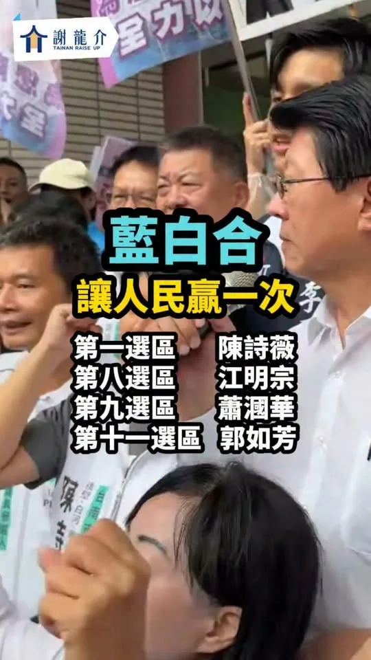
民眾黨臺南市議員全壘打！臺南藍白100%合作 台灣民眾黨
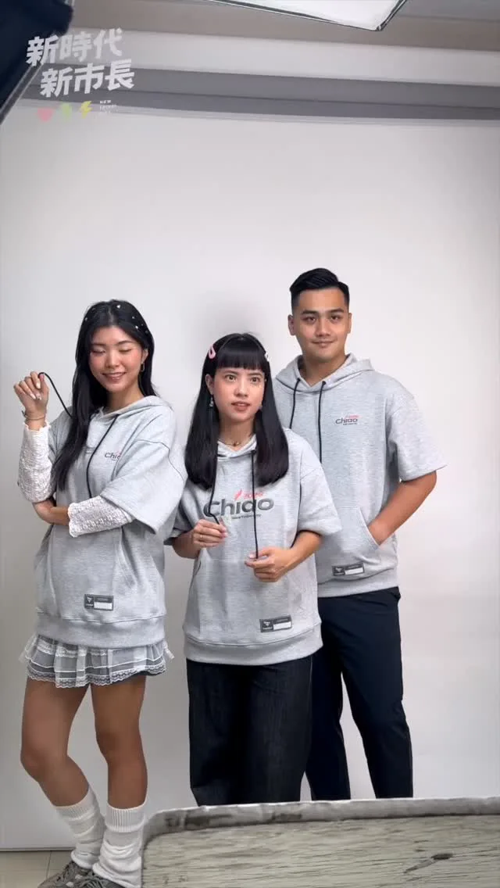
@su.chiaohui:巧慧的應援新品搶先看！ 這次我們推出的「與Chiao同行短袖帽T」、「新北亮晶巾」、「新北新風帽」三種特色單品首次亮相！ 透過簡約又有型的設計，不只可以拿來應援，日常穿戴也超時尚！ ✨9/5（六）新北競總成立大會首次登場 捐款滿額即贈✨ 歡迎大家一起來板橋第一運動場幫我加油打氣，也把時尚單品帶回家❤️

今天，我正式登記參選台中市長！ 我期許自己成為「市民的市長」，傾聽每一份聲音、回應每一項需求，讓市民都能對我們的城市充滿希望。 11/28，請大家給台中女兒何欣純一個機會，讓我們一起打造更欣欣向榮的台中！ #心存大台中 #市長換欣_台中創新
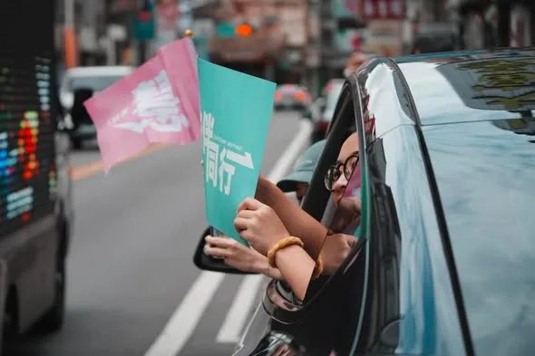
感謝頂著正午大太陽☀️特地準備應援小物，來給我們熱情鼓勵的「杰伴」！ 我們的衣服濕了又乾、乾了又濕，但聆聽民意、勤跑基層的腳步不會停下，世杰跟團隊會持續深入大街小巷，把我們對這座城市的承諾，告訴每一位市民朋友。 謝謝黃瓊慧 桃園觀察日記議員、李光達議員（桃園區）議員、黃家齊議員、余信憲議員、桃園媽媽-李柏瑟議員候選人全程陪同、並肩作戰，展現桃園隊團結氣勢。 最後不到三個月，懇請每一位關心桃園好朋友，成為世杰的分身跟小蜜蜂，把政見跟願景分享給身邊所有桃園人！ 支持黃世杰，市政不打結！我們一起讓心桃園，動起來💖

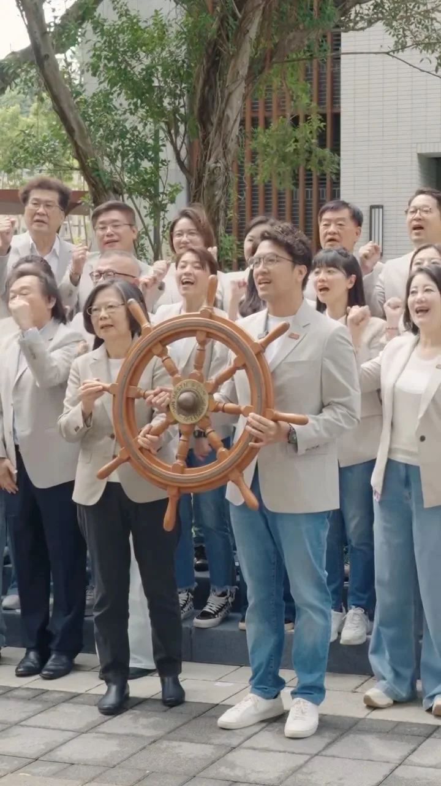
接下這個舵，我們將乘著這股洋流，一起駛進市政府！ ⠀ 謝謝 @tsai_ingwen 小英總統今天陪同我和台北隊登記參選。 ⠀ 因為我來了， 因為台北隊來了， 我們會一起 讓台北順起來，航向新未來！
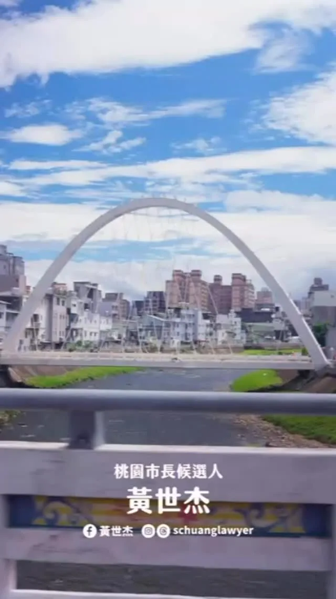
@schuanglawyer:我是黃世杰，今天正式登記參選桃園市長！ 桃園需要更多活力跟希望，請跟我一起杰伴同行💖
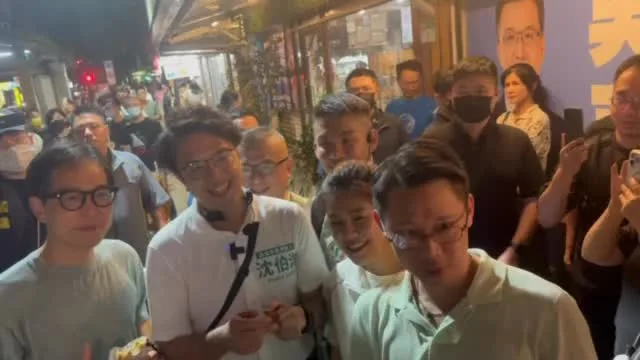
@pumashen:南機場夜市不只有創意 還有同學愛ಥ_ಥ ⠀ 看到有自製手燈 機車影片燈箱 路上還遇到好幾個建中同學 真的好開心 ⠀ 遇到嗆聲的 也很有創意 希望他們有愉快的夜晚 ⠀ 感謝大家幫我充電 也謝謝店家的款待 今天我都有簽好簽滿喔
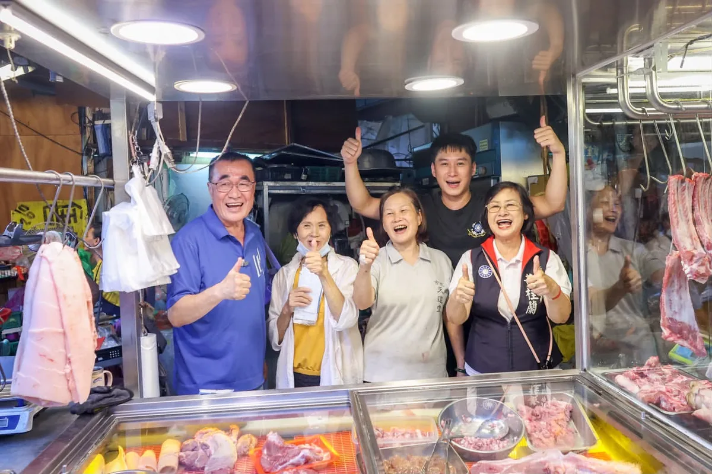
@hammer__lee:「你是好人我知道」，鄉親這句話是鼓勵，我更要說「我是做事的人」。 好多鄉親會偷偷在我耳邊，對我說加油，給我力量，這是我喜歡掃市場的原因，民意在眼前，讓我勇往直前。 今天傍晚，我到蘆洲黃昏市場，和鄉親與攤商打招呼。 熱情依舊，感動依舊。 說實在，每回掃市場，我都很感動，有鄉親在機車上按喇叭叫我，靠邊停下來只為了跟我握手。 也有好大聲的鼓勵「川伯加油」，我回頭看時已經不見人影，團隊告訴我，是兩位年輕人騎車經過那一剎那，給我的最大支持。 我與蘆洲的感情，讓我一路走來都有好心情。
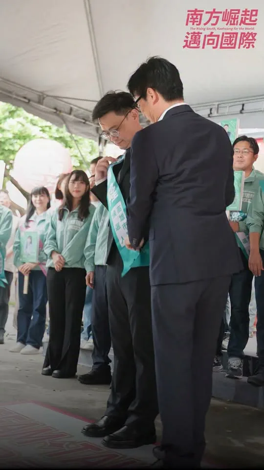
高雄隊，正式出發！ 接下關鍵第四棒，和所有隊友並肩向前，延續進步，為高雄拚出更好的未來。 高雄第一，全力以赴💪
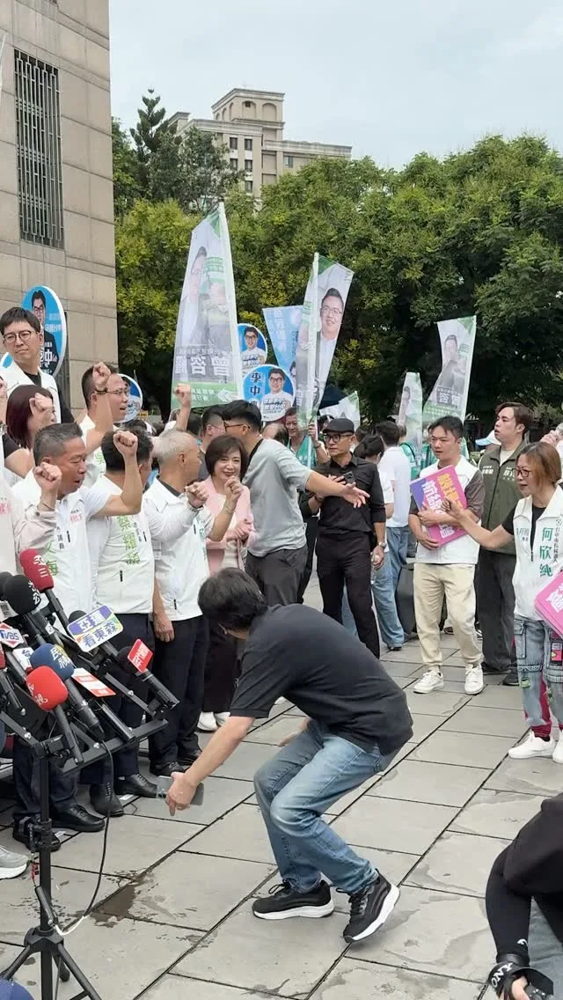
@a_chun1973:倒數88天，我正式登記參選台中市市長。 這一路走來，受到許多照顧、得到很多支持 我總是提醒自己：不要辜負選民的交托。 台中市民期待一位會解決問題、會做實事的城市首長！ 這是我的使命，我也願意承擔。 11/28，請大家給台中女兒何欣純一個機會 讓我們共同打造欣欣向榮的台中！
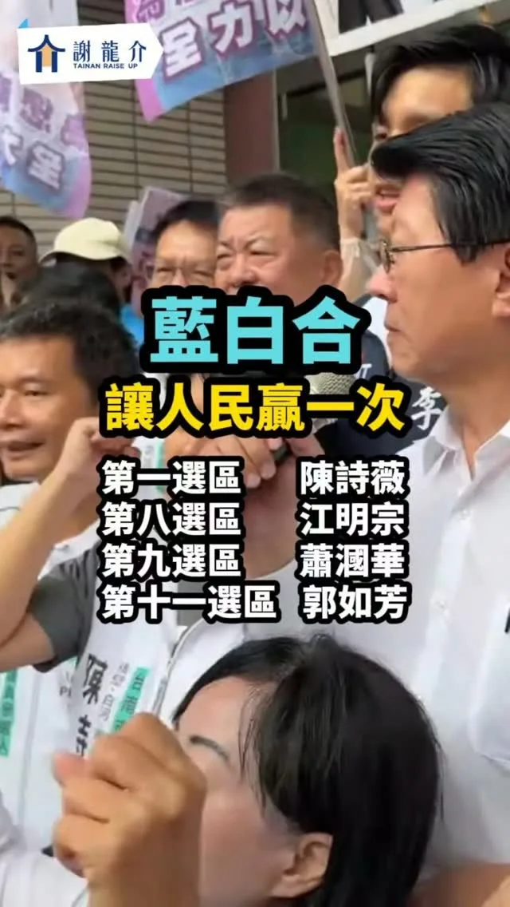
@hsiehlungchieh:民眾黨臺南市議員全壘打！臺南藍白100%合作
巧慧的應援新品搶先看！ 這次我們推出的「與Chiao同行短袖帽T」、「新北亮晶巾」、「新北新風帽」三種特色單品首次亮相！ 透過簡約又有型的設計，不只可以拿來應援，日常穿戴也超時尚！ ✨9/5（六）新北競總成立大會首次登場 捐款滿額即贈✨ 各品項資訊一次看⬇️ 【與Chiao同行短袖帽T 捐款$1798】 剪裁俐落有型，質感灰底搭配大小Chiao字供你挑選，一起走出一座Chiao城市吧！ 【新北亮晶巾 捐款$999】 新世代挺身而出扛起新時代，快秀出你的緹花毛巾，大聲告訴大家：巧慧要讓衛星變繁星，新北亮晶晶✨ 【新北新風帽 捐款$599】 兼具實用與時尚的一頂好帽，讓你日常穿搭、外出運動都有質感，現在就戴上它，與巧慧共創新北新風貌！ 【Chiao喜歡！我全都要！ 捐款$2999】 29 GoGo！新北29區全都向前衝！台灣好物全套組也要一次滿足！把Taiwolf聯名全系列帶回家，你就是力挺巧慧的驕傲台灣囡仔！ 歡迎大家一起來板橋第一運動場幫我加油打氣，也把時尚單品帶回家❤️
台中的女兒 海線的媳婦何欣純 正式登記參選台中市長！給我一個機會 打造更欣欣向榮的台中

今天，我正式登記成為「台北市長候選人」。 ⠀ 常有人問我，想要把台北帶往哪裡？ ⠀ 首都，不一定要是最大的城市， 但一定要是最有方向、最能夠為台灣引路的城市。 這，才是台北該有的樣子。 ⠀ 台北擁有最多的資源與人才， 值得更長遠的規劃， 也值得擁有更大的夢想。 ⠀ 近四個月前，我宣佈參選台北市長。 當時我提出， 台北的市政不需要更多的 OK 繃， 而是需要一套長久運作的生態系， 以及十年、二十年的長遠規劃。 讓卡住的台北，真正順起來。 ⠀ 過去這段時間， 我提出交通、育兒、兒少保護、公共衛生及AI產業等不同政策。 ⠀ 因為市政府不能只在問題發生後補救， 而要提早看見市民的需要、做好準備。 ⠀ 我要成為問題的「解決者」， 更要成為台北未來的「開拓者」。 ⠀ 我要讓台北 ⠀ 生生有人護，餐餐都安心； 路路都平坦，處處有樹蔭； 人人能運動，月月有AI； 攤攤有生意，夜間有人顧； 我們要一個看得見的未來， 我們要一座持續發展的城市， ⠀ 這才叫做「世界的台北」 。 ⠀ 今天我要告訴大家，台北做得到。 ⠀ 因為我來了。沈伯洋來了。 而且，我不是一個人來的。 ⠀ 小英總統來了，站在我身旁； 台北隊來了，站在我身後； 你們也來了，就在我面前。 ⠀⠀ ⠀ 今天登記，不只是把我的名字寫上去， 更是要把台北的未來，還給每位市民。 ⠀ 接下來的八十七天， 台北要選擇的是一種「治理方式」， ⠀ 請選擇具有規劃未來、解決問題市長。 請選擇沈伯洋。 ⠀ 11月28日，支持沈伯洋。 讓台北順起來，航向新未來！
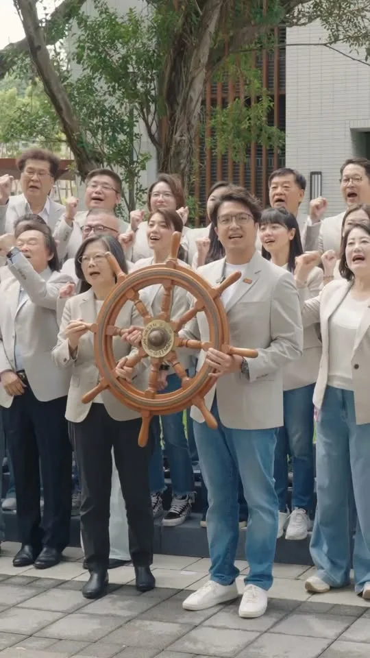
接下這個舵，我們將乘著這股洋流，一起駛進市政府！ ⠀ 謝謝 蔡英文 Tsai Ing-wen小英總統今天陪同我和台北隊登記參選。 ⠀ 因為我來了， 因為台北隊來了， 我們會一起 讓台北順起來，航向新未來！
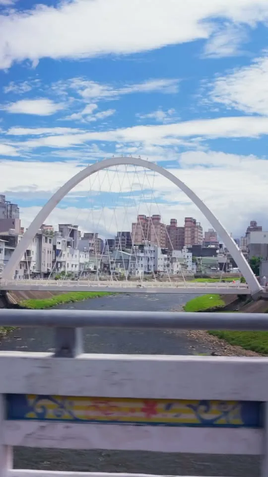
我是黃世杰，今天正式登記參選桃園市長！ 桃園需要更多活力跟希望，請跟我一起杰伴同行💖
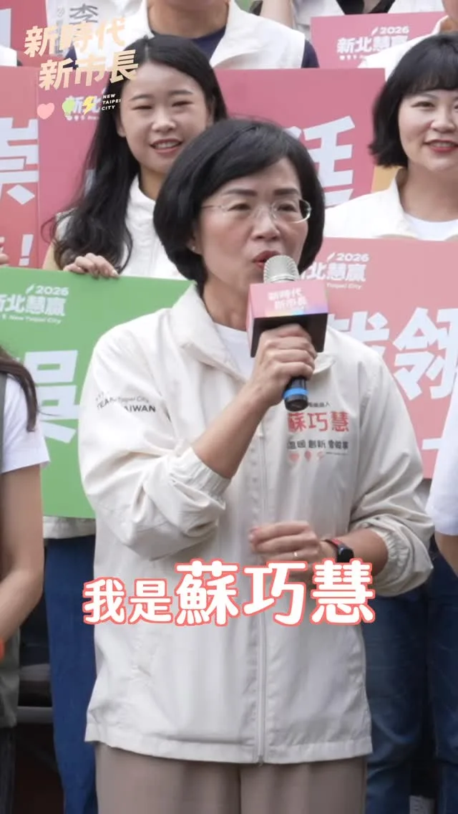
@su.chiaohui:我是蘇巧慧，今天我正式參選新北市長！
「你是好人我知道」，鄉親這句話是鼓勵，我更要說「我是做事的人」。 好多鄉親會偷偷在我耳邊，對我說加油，給我力量，這是我喜歡掃市場的原因，民意在眼前，讓我勇往直前。 今天傍晚，我到蘆洲黃昏市場，和鄉親與攤商打招呼。 熱情依舊，感動依舊。 說實在，每回掃市場，我都很感動，有鄉親在機車上按喇叭叫我，靠邊停下來只為了跟我握手。 也有好大聲的鼓勵「川伯加油」，我回頭看時已經不見人影，團隊告訴我，是兩位年輕人騎車經過那一剎那，給我的最大支持。 我與蘆洲的感情，讓我一路走來都有好心情。
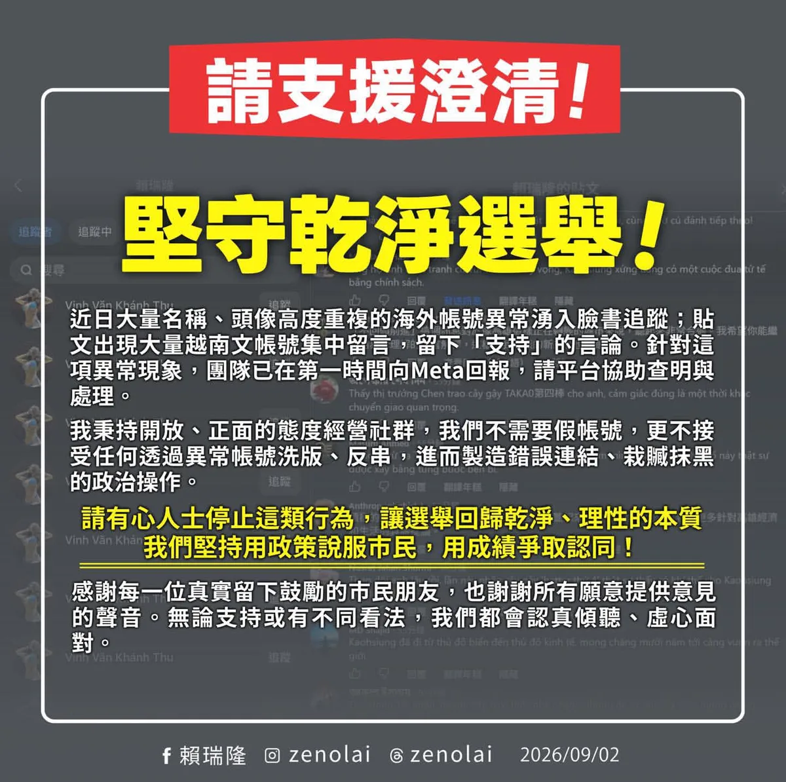
@zenolai:堅守乾淨選舉 昨晚起，發現大量名稱、頭像高度重複的海外帳號異常湧入臉書追蹤；今天上午發布參選登記貼文後，更出現大量越南文帳號集中留言，留下「支持」的言論。 針對這項異常現象，團隊已在第一時間向 Meta 回報，請平台協助查明與處理。 我要再次說明，我一直秉持開放、正面的態度經營社群，我們不需要假帳號，更不接受任何透過異常帳號洗版、反串，進而製造錯誤連結、栽贓抹黑的政治操作。 上午登記時，我也宣示「正面第一」的承諾，相信高雄市民期待的是政策、願景與城市發展的對話，而不是充滿算計的網路攻防。 請有心人士停止這類行為，讓選舉回歸乾淨、理性的本質。我們堅持用政策說服市民，用成績爭取認同。 感謝每一位真實留下鼓勵的市民朋友，也謝謝所有願意提供意見的聲音。無論支持或有不同看法，我們都會認真傾聽、虛心面對；我也會繼續踏實打拚，用政策與行動爭取更多高雄市民的認同與支持。
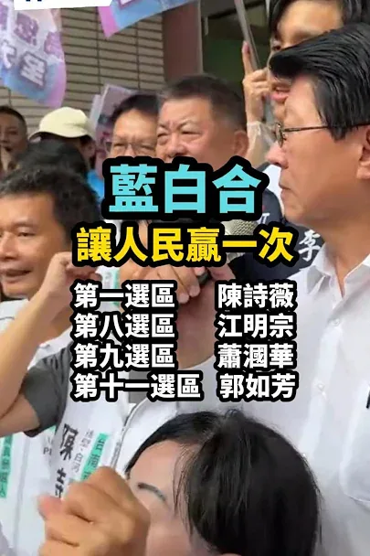
TPP Tainan City Councilors Sweep! 100% Blue-White Cooperation in Tainan
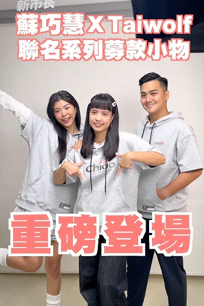
A Sneak Peek at Chiao-Hui's New Support Merch!

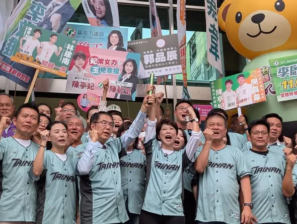
台南女市長・議員全壘打！⚾️ 今天，亭妃和台南隊一起完成登記！ 從 賴清德市長、 黃偉哲市長，一棒一棒累積台南的基礎；今天，偉哲市長將接力棒交到我手上，代表的不只是市政經驗的傳承，更是責任的延續。 這一場，不是個人的選舉，而是整個台南隊的團體戰！ 台南400年還沒有女性市長，這一次，我要和大家一起寫下歷史新頁。 用女性的疼心、愛心顧好台南這個家，更用最大的決心、執行力與行動力，帶領台南邁向文化、農業、觀光、科技、交通、社福的新時代！ 台南隊正式出航！ 2026，我們一起拚勝選、拚議會過半！ 台南女市長・議員全壘打！⚾️ #陳亭妃 #台南女市長 #台南隊 #議員全壘打 #2026勝利
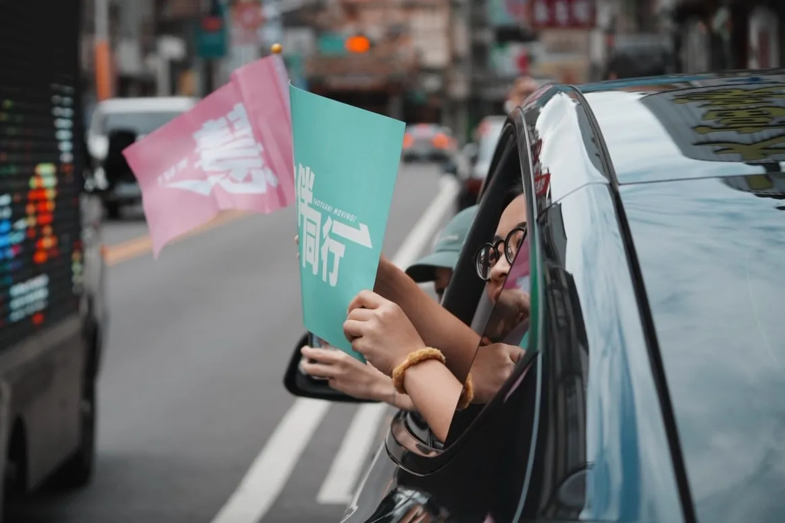
@schuanglawyer:感謝頂著正午大太陽☀️特地準備應援小物，來給我們熱情鼓勵的「杰伴」！ 我們的衣服濕了又乾、乾了又濕，但聆聽民意、勤跑基層的腳步不會停下，世杰跟團隊會持續深入大街小巷，把我們對這座城市的承諾，告訴每一位市民朋友。 最後不到三個月，懇請每一位關心桃園好朋友，成為世杰的分身跟小蜜蜂，把政見跟願景分享給身邊所有桃園人！ 支持黃世杰，市政不打結！我們一起讓心桃園，動起來💖
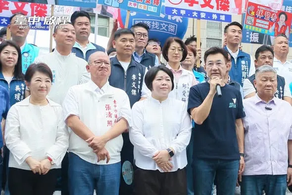
市長、議員齊心努力🤝 臺中隊大團結，一起讓 #臺中啟程！💪 啟臣非常榮幸，今天陪同議長張清照、顏莉敏副議長及國民黨優秀的議會夥伴們完成參選登記，展現臺中藍軍大團結的氣勢！ 臺中這些年的進步，歸功於盧秀燕市長領導有方與議會的全力協助。感謝張議長與顏副議長的調和鼎鼐，締造府會和諧，讓臺中穩坐幸福宜居城市。 臺中即將邁入新階段，啟臣也已準備好「一二三四五，臺中更幸福」願景！未來的發展，更需要所有議會夥伴繼續攜手打拚，讓大臺中持續升級，成為 #國際旗艦城 ，成為市民的 #幸福旗艦城 。 #臺中啟程 #打造旗艦城 #市議會 #臺中隊 #臺中更幸福